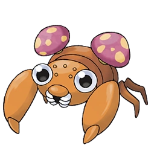
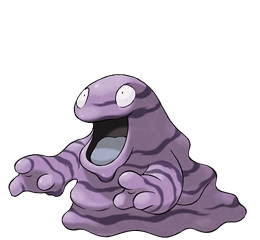
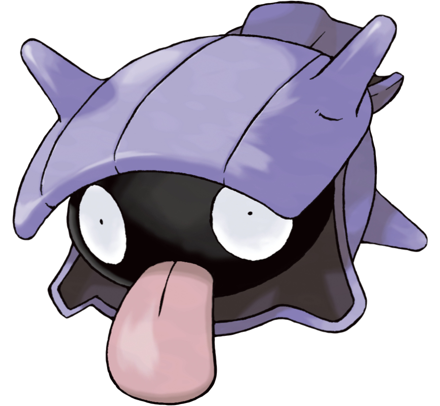
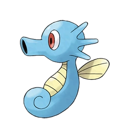
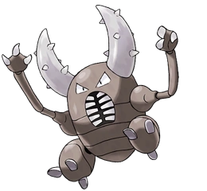
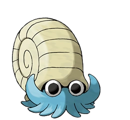
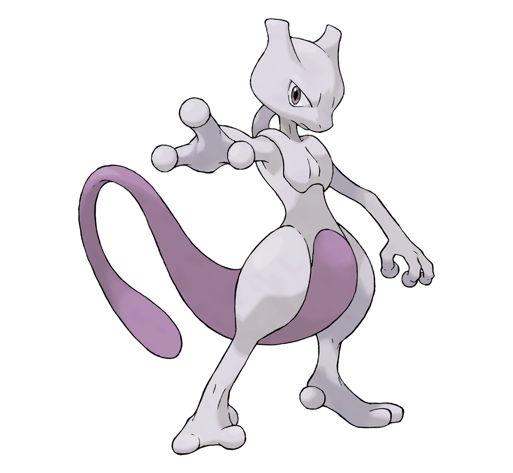
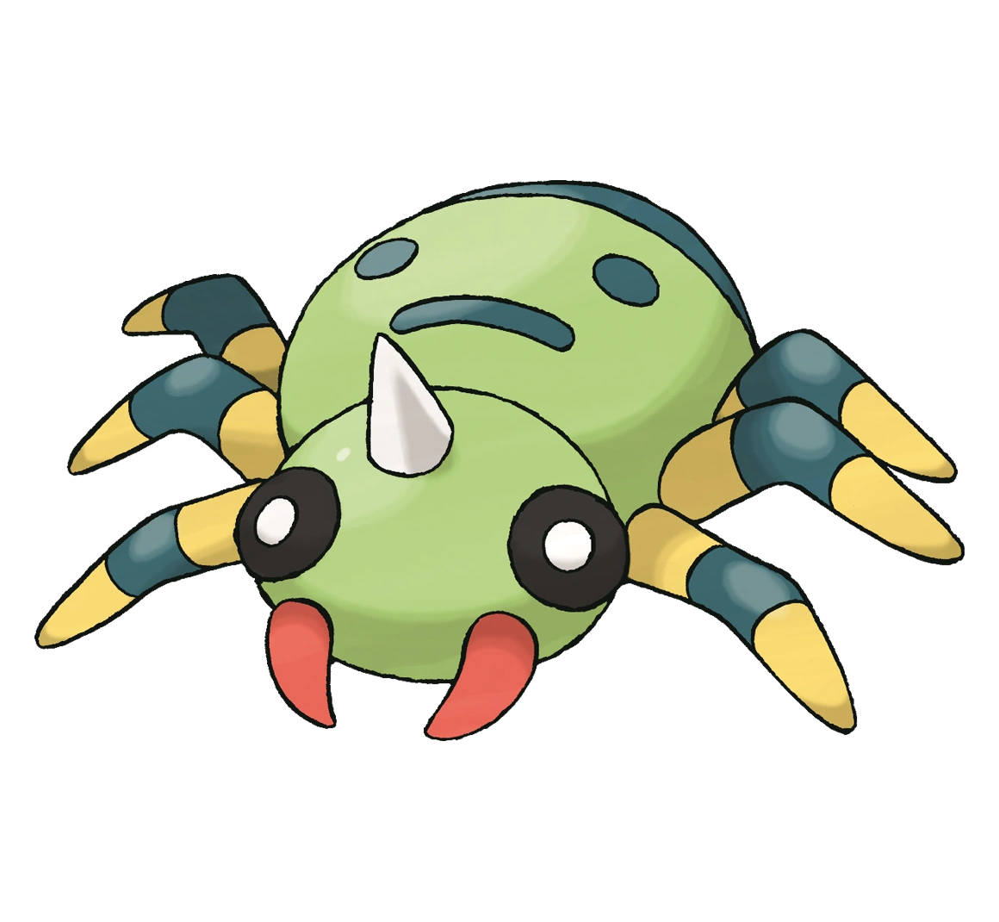

CARTAS
Bulbasaur

Tipo:PlantaVeneno Peso: 6,9 kg Altura:0,7 m Color:Verde Forma:Cuadrúpedo Hábitat:Urbano Clasificación: Pokemon Semilla, Evoluciones: Bulbasaur Pokémon Inicial IvysaurNivel 16 VenusaurNivel 32
Charmander

Tipo:Fuego Peso:8,5 kg Altura:0,6 m Color:Rojo Forma:Vertical Hábitat:Terreno abrupto Clasificación:Pokemon Lagartija, Evoluciones CharmanderPokémon Inicial CharmeleonNivel 16 CharizardNivel 36
Squirtle

Tipo:Agua Peso:9 kg Altura:0,5 m Color:Azul Forma:Vertical Hábitat:Terreno abrupt Clasificación:Pokemon Tortuguita, Evoluciones SquirtlePokémon Inicial WartortleNivel 16 BlastoiseNivel 36
Carterpie

Tipo:Bicho Peso: 2,9 kg Altura:0,3 m Color:Verde Debilidad:Fuego, volador, roca Habilidad: Polvo escudo, Sexo: maculino y femenino
Weedle

Altura: 0.3m, Peso: 3.2 kg, Sexo: Femenino y masculino, Categoria: Oruga, Habilidad:Polvo escudo, Debilidad: Fuego, Psiquico, Volador, Roca
Pidgey
Altura: 0.3m, Peso:1.8kg, Sexo: Femenino y masculino,Habilidad: Vista Lince y Tumbos, Tipo: normal y volador, Debilidad: Electrico, Hielo, Roca
Rattata

Tipo:Normal Peso: 3,5 kg Altura:0,3 m Debilidad:Lucha Habilidad: Fuga y Agallas, Sexo: maculino y femenino
Spearow
Altura: 0.3m, Peso: 2.0 kg, Sexo: Femenino y masculino, Habilidad:Polvo escudo, Debilidad: Electrico, Hielo, Roca, Categoria: Pajarito
Ekans
Altura: 2.0m, Peso:6.9kg, Sexo: Femenino y masculino, Habilidad: Mudar e Intimidacion, Tipo: Veneno, Debilidad: Psiquico y Tierra, Categoria: Serpiente:
Pikachu

Tipo:Electrico Peso: 6.0 kg Altura:0,4 m Debilidad:Tierra Habilidad: Electrico, Sexo: maculino y femenino, Categoria: Raton
Snadshrew

Altura: 0.6m, Peso: 12.0 kg, Sexo: Femenino y masculino, Habilidad:Velo Arena, Debilidad: Agua, Planta, Hielo, Categoria: Raton
Nidoran
Altura: 0.4m, Peso:7.0kg, Sexo: Femenino, Habilidad: Punto toxico y Rivalidad, Tipo: Veneno, Debilidad: Psiquico y Tierra, Categoria: Pin Veneno
Nidoqueen

Tipo:Veneno y Tierra, Peso: 60.0 kg Altura:1,3 m Debilidad: Agua, Psiquico, Hielo, Tierra, Habilidad:Punto Toxico, Rivalidad, Sexo: Femenino, Categoria: Taladro
Clefairy
Altura: 0.6m, Peso: 7.5 kg, Sexo: Femenino y masculino, Habilidad:Gran Encanto y Muro magico, Debilidad: Veneno, Acero, Categoria: Hada
Vulpix
Altura: 0.6m, Peso:9.9kg, Sexo: Femenino y Masculino, Habilidad: Absorbe fuego, Tipo: Fuego, Debilidad: Agua, Tierra, Roca, Categoria:Zorro
Jigglypuff

Tipo:Normal y Hada, Peso: 5.5 kg Altura:0,5 m Debilidad: Acero, Veneno, Habilidad:Gran Encanto y Tenacidad, Sexo: Femenino y Masculino, Categoria: Globo
Zubat

Altura: 0.8m, Peso: 7.5 kg, Sexo: Femenino y masculino, Habilidad: Fuerza Mental, Debilidad: Psiquico, Hielo, Electrico, Roca, Categoria: Murcielago, Tipo: Veneno y Volador
Oddish

Altura: 0.5m, Peso:5.4kg, Sexo: Femenino y Masculino, Habilidad: Clorofila, Tipo: Planta, Veneno, Debilidad: Fuego, Psiquico, Volador, Hielo Categoria: Hierbajo
Paras
Tipo:Bicho y Planta, Peso: 5.4 kg Altura:0,3 m Debilidad: Volador, Fuego, Hielo, Veneno, Roca, Bicho Habilidad: Efecto Espora y Piel Seca, Sexo: Femenino y Masculino, Categoria: Hongo
Venonat
Altura: 1.0m, Peso: 30.0 kg, Sexo: Femenino y masculino, Habilidad: Ojos Compuesto y Cromolente, Debilidad: Fuego, Psiquico, Volador, Roca, Categoria: Insecto, Tipo: Veneno y Bicho
Diglett
Altura: 0.2m, Peso:0.8kg, Sexo: Femenino y Masculino, Habilidad: Velo Arena y Trampa Arena, Tipo: Tierra, Debilidad: Agua, Planta, Hielo Categoria: Topo
Meowth
Tipo:Normal, Peso: 4.2 kg Altura:0,4 m Debilidad: Lucha, Habilidad: Recogida y Experto, Sexo: Femenino y Masculino, Categoria: Gato araña
Psyduck
Altura: 0.8m, Peso: 19.6 kg, Sexo: Femenino y masculino, Habilidad: Aclimatacion y Humedad, Debilidad: Electrico, Planta, Categoria: Pato, Tipo: Agua
Mankey
Altura: 0.5m, Peso:28.0kg, Sexo: Femenino y Masculino, Habilidad: Espiritu vital e Irascible, Tipo: Lucha, Debilidad: Psiquico, Volador, Hada Categoria: Mono Cerdo
Growlithe

Tipo:Fuego, Peso: 19.0 kg Altura:0,7 m Debilidad: Agua, Tierra y Roca, Habilidad: intimidacion y absorbe fuego, Sexo: Femenino y Masculino, Categoria: Perrito
Poliwag

Altura: 0.6m, Peso: 12.4 kg, Sexo: Femenino y masculino, Habilidad: Absorbe el agua y Humedad, Debilidad: Electrico, Planta, Categoria: Renacuajo, Tipo: Agua
Abra
Altura: 0.9m, Peso:19.5kg, Sexo: Femenino y Masculino, Habilidad: Fuerza mental y Sincronia, Tipo: Psiquico, Debilidad: Siniestro, Fantasma y Bicho Categoria: Psi
Bellsprout
Tipo:Planta y Veneno, Peso: 4.0 kg Altura:0,7 m Debilidad: Fuego, Psiquico, Volador y Hielo, Habilidad: Clorofila, Sexo: Femenino y Masculino, Categoria: flor
Machop

Altura: 0.8m, Peso: 19.5 kg, Sexo: Femenino y masculino, Habilidad: Agallas e Indefenso, Debilidad: Psiquico, Volador y Hada, Categoria: Superpoder, Tipo: Lucha
Tentacool

Altura: 0.9m, Peso:45.5kg, Sexo: Femenino y Masculino, Habilidad: Viscosecrecion y Cuerpo Puro, Tipo: Agua y veneno, Debilidad: Psiquico, Electrico y Tierra, Categoria: Medusa
Geodude

Tipo:Roca y Tierra, Peso: 20.0 kg Altura:0,4 m Debilidad: Acero, Lucha, Agua, Hielo, Planta y Tierra, Habilidad: Cabeza de roca, Sexo: Femenino y Masculino, Categoria: Roca
Rhyhon
Su inteligencia es limitada, aunque posee una fuerza tan considerable que le permite incluso derribar rascacielos con solo embestirlos.
Slowpoke
Altura: 1.2m, Peso:65.0kg, Sexo: Femenino y Masculino, Habilidad: Ritmo propio y Despiste, Tipo: Agua y psiquico, Debilidad: Fantasma, Siniestro, Planta, Electrico y Bicho, Categoria: Atontado
Koffing

Tipo:Roca y Tierra, Peso: 20.0 kg Altura:0,4 m Debilidad: Acero, Lucha, Agua, Hielo, Planta y Tierra, Habilidad: Cabeza de roca, Sexo: Femenino y Masculino, Categoria: Veneno
Ponyta
Altura: 1.0m, Peso: 30.0 kg, Sexo: Femenino y masculino, Habilidad: Fuga y Absorbe fuego, Debilidad: Agua, Tierra y Roca, Categoria: Caballo de fuego, Tipo: Fuego
Slowpoke
Altura: 1.2m, Peso:65.0kg, Sexo: Femenino y Masculino, Habilidad: Ritmo propio y Despiste, Tipo: Agua y psiquico, Debilidad: Fantasma, Siniestro, Planta, Electrico y Bicho, Categoria: Atontado
Magnemite
Tipo:Acero y Electrico, Peso: 6.0 kg Altura:0,3 m Debilidad: Fuego, Lucha y Tierra, Habilidad: Robustez e Iman, Sexo: Femenino y Masculino, Categoria: Iman
Farfetch
Altura: 0.8m, Peso: 15.0 kg, Sexo: Femenino y masculino, Habilidad: vista de lince y fuerza mental, Debilidad: Hielo, Roca y Electrico, Categoria: Pato Salvaje, Tipo: Normal y Volador
Doduo
Altura: 1.4m, Peso:39.2kg, Sexo: Femenino y Masculino, Habilidad: Fuga y Madrugar, Tipo: Normla y volador, Debilidad: Electrico, Hielo y Roca, Categoria: Ave gemela
Seel
Tipo:Agua, Peso: 90.0 kg Altura:1,1 m Debilidad: Planta y Electrico, Habilidad: Sebo e Hidratacion, Sexo: Femenino y Masculino, Categoria: Leon Marino
Grimer
Altura: 0.9m, Peso: 30.0 kg, Sexo: Femenino y masculino, Habilidad: Hedor y Viscocidad, Debilidad: Psiquico y Tierra, Categoria: Lodo, Tipo: Venenoso
Shellder
Altura: 0.3m, Peso:4.0kg, Sexo: Femenino y Masculino, Habilidad: Caparazon y encadenado, Tipo: Agua, Debilidad: Planta y Electrico, Categoria: Bivaldo
Haunter

Tipo: fantasma, Peso: 90.0 kg Altura:1,1 m Debilidad: Fantasma, Tierra, Siniestro, Psiquico y Tierra, Habilidad: Levitacion, Sexo: Femenino y Masculino, Categoria: Gas
Onix
Altura: 0.9m, Peso: 210.0 kg, Sexo: Femenino y masculino, Habilidad: Cabeza Roca y Robustez, Debilidad: Acero, Lucha, Agua, Hielo, Planta y Tierra, Categoria: Serpiente Roca, Tipo: Roca y Tierra
Drowzee

Altura: 1m, Peso:32.0kg, Sexo: Femenino y Masculino, Habilidad: Insomnio y Alerta, Tipo: Psiquico, Debilidad: Fantasma, siniestro y Bicho, Categoria:Hipnosis
Krabby

Tipo: Agua, Peso: 6kg Altura:0,4 m Debilidad: Planta y Electrico, Tierra, Habilidad: Caparazon y Corte Fuerte, Sexo: Femenino y Masculino, Categoria: Cangrejo
Voldtorb
Altura: 0.9m, Peso: 10 kg, Sexo: Ni idea, Habilidad: Elec Estatica e Isonizar, Debilidad:Tierra, Categoria: Bola, Tipo: Electrico
Eggcute
Altura: 1m, Peso:2.0kg, Sexo: Femenino y Masculino, Habilidad: Clorofila, Tipo: Planta y Psiquico, Debilidad: Fantasma, siniestro, Bicho, Volador, Fuego, Huelo y Veneno Categoria:Huevo
Cubone
Tipo: Tierra, Peso: 6kg Altura:0,4 m Debilidad: Planta, Agua y Hielo, Habilidad: Cabeza de roca, Sexo: Femenino y Masculino, Categoria: Solitario
Hitmonle

Altura: 0.9m, Peso: 10 kg, Sexo: masculino, Habilidad: Flexibilidad, Debilidad:Psiquico, Volador y Hada, Categoria: Patada, Tipo: Lucha
Lickitung
Altura: 1m, Peso:2.0kg, Sexo: Femenino y Masculino, Habilidad: Despiste, Tipo: Normal, Debilidad: Lucha, Categoria:Lametazo
Chansey
Un generoso Pokémon que pone huevos muy nutritivos y se los da a personas o Pokémon heridos.
Tangela

Sus lianas no dejan de crecer aunque se le desprendan. Aún se desconoce qué aspecto tiene sin ellas
Kangaskhan
Aunque lleve una cría en el marsupio, su juego de pies no pierde ligereza. Abruma al rival con ráfagas de ágiles puñetazos.
Horsea
Habita en mares de aguas tranquilas. Si se siente en peligro, expulsará por la boca una densa tinta negra para poder huir.
Goldeen
Sus aletas pectorales, caudal y dorsal ondean gráciles en el agua. Por eso se le llama el Bailarín Acuático.
Staryu

A finales de verano, se pueden ver grupos de Staryu en la orilla de la playa sincronizando el brillo de sus núcleos a ritmo regular.
Mr mime

Muchos estudiosos sostienen que el desarrollo de sus enormes manos se debe a su afán por practicar la pantomima.
Scyther
Avanza por la hierba con sus afiladas guadañas, más rápido de lo que el ojo humano puede percibir.
Jynx
En cierta parte de Galar se conocía a Jynx como la Reina del Hielo y se reverenciaba con cierto temor.
Electabuzz
Es habitual que las centrales eléctricas cuenten con Pokémon de tipo Tierra para hacer frente a los Electabuzz ávidos de electricidad.
Magmar
Abate a sus presas con las llamas que genera y con frecuencia acaba reduciéndolas a carbonilla por accidente.
Pinsir
Los Pinsir se juzgan entre ellos por la robustez de la cornamenta. Cuanto más imponente sea, más agradará a sus congéneres del sexo opuesto.
Tauros

Cuando elige una presa, embiste sin pensárselo. Este Pokémon es famoso por su carácter violento.
Magikarp

Un Pokémon desvalido y patético. A veces es capaz de saltar alto, pero rara vez más de 2 m.
Lapras
Este Pokémon posee una notable inteligencia y un corazón de oro. Entona un canto melodioso mientras surca el mar.
Ditto
Su habilidad para transformarse es perfecta, pero, si se le hace reír, perderá la fuerza y no podrá mantenerse transformado.
Eevee
Es capaz de evolucionar de muchas maneras para adaptarse sin problemas a cualquier medio.
Porygon
Se trata del primer Pokémon del mundo creado a partir de códigos de programación gracias al uso de tecnología de vanguardia.
omanyte
Varios ejemplares han escapado o bien han sido liberados tras su restauración, lo que comienza a suscitar una serie de problemas.
Kabuto

Un Pokémon casi extinto. Cada tres días, muda el caparazón, que se va endureciendo de forma progresiva.
Aerodactyl
Un feroz Pokémon de la época prehistórica al que no bastan todos los avances tecnológicos actuales para regenerar a la perfección.
Snorlax
No se encuentra satisfecho hasta haber ingerido 400 kg de comida cada día. Cuando acaba de comer, se queda dormido.
Articuno
Se dice que sus bellas alas azules se componen de hielo. Vuela en torno a las montañas nevadas con su larga cola al viento.
Zapdos

Posee el poder de controlar la electricidad a su antojo. Según la creencia popular, anida oculto en oscuros nubarrones de tormenta
Moltrex
Una de las aves legendarias. Al batir las alas, las llamas que las envuelven emiten un hermoso fulgor rojo.
Dratini
Durante la etapa de crecimiento, muda muchas veces de piel y se protege mediante una cascada.
Mewtwo
Su ADN es casi el mismo que el de Mew. Sin embargo, su tamaño y carácter son muy diferentes.
Mew

Si se observa a través de un microscopio, puede distinguirse cuán corto, fino y delicado es el pelaje de este Pokémon..
Chikorita
Al luchar, Chikorita agita la hoja que tiene para mantener a raya al rival. Pero, al mismo tiempo, libera una suave fragancia que apacigua el encuentro y crea un ambiente agradable y de amistad.
Cyndaquil

Cyndaquil se protege soltando llamas por el lomo. Cuando está enfadado, las llamas son fieras, pero, si está cansado, solo consigue echar algunas chispas que no llegan a cuajar en una completa combustión
Totodile

Totodile tiene cuerpo pequeño, pero fuertes mandíbulas. A veces, piensa que solo está dando un mordisquito y hace unas heridas bastante considerables..
Sentret
Sentret no duerme a menos que otro haga guardia. El que hace de centinela lo despertará al mínimo signo de peligro. Cuando este Pokémon se separa de su manada, es incapaz de echarse a dormir, presa del miedo.
Hoothoot
Se apoya en una sola pata y, cuando cambia de una a otra, se mueve tan rápido que apenas se percibe.
Ledyba
Este Pokémon no soporta el frío. En Alola, sin embargo, se encuentra en su elemento y se lo puede ver revoloteando vivaracho por doquier.
Spinarak
Segrega un hilo de increíble resistencia con el que teje su tela, capaz de soportar el peso de una roca de 10 kg sin romperse.
Crobat
Sus patas se han convertido en alas. Se lanza sobre su presa en un vuelo silencioso a alta velocidad y le clava los colmillos en la nuca.
Pichu
No se le da muy bien el almacenamiento de electricidad. A la mínima, descarga energía sin darse cuenta.
Cleffa
Los lugareños rumorean que suele encontrarse en lugares donde han caído estrellas fugaces.
Igglybuff
Su cuerpo suave y elástico desprende un aroma ligeramente dulce. Cuando empieza a botar, no puede parar.
Togepi

El cascarón parece estar lleno de alegría. Dicen que trae buena suerte si se le trata con cariño
Natu
Trepa con gran habilidad por el tronco de los árboles, donde aprovecha para picotear los brotes nuevos.
Mareep
Cuando almacena electricidad estática en su cuerpo, la lana dobla su volumen. Quien la toque recibirá una descarga
Amapharos
El brillo de su cola es visible desde lejos. En la antigüedad, se usaba mucho como faro.
Bellosoom
bunda en los trópicos. Al bailar, sus pétalos se rozan y emiten un agradable sonido.
Marill
Tiene un pelaje que repele el agua, por lo que está seco incluso después de bañarse.
Sudowoodo
Aunque pretende ser un árbol, en su composición se parece más a una roca que a una planta.
Politoed
Aparece a orillas de las charcas al caer la noche. Reclama su territorio profiriendo un fuerte grito que recuerda a un bramido.
Hoppip
Recorre largas distancias arrastrado por el viento. Se desconoce la procedencia exacta de los ejemplares que habitan en Paldea.
Aipoom
De tanto utilizar la cola, esta se ha vuelto más hábil que sus dedos. Construye sus nidos en las copas de los árboles
Sunkern
Cae de repente del cielo por las mañanas. Como sabe que es débil, solo se dedica a nutrirse hasta que evoluciona.
Yanma
Yanma tiene un ángulo de visión de 360° sin mover los ojos. Es un gran volador, experto en hacer repentinas paradas y cambios de dirección en el aire. Aprovecha la habilidad que tiene de volar para lanzarse sobre su presa.
Wooper
Este Pokémon vive en aguas frías. Sale del agua para buscar comida cuando refresca el ambiente.
Al predecir el siguiente movimiento de su rival, los extremos de su cola bífida tiemblan ligeramente..
Murkrow
Yanma tiene un ángulo de visión de 360° sin mover los ojos. Es un gran volador, experto en hacer repentinas paradas y cambios de dirección en el aire. Aprovecha la habilidad que tiene de volar para lanzarse sobre su presa.Temido y odiado por muchos, dicen que trae la desgracia a todos aquellos que lo ven por la noche.
Misdreavus
Sorprende a la gente en mitad de la noche y acumula su miedo como energía.
Slowking
Al ser mordido en la cabeza, Slowpoke absorbió unas toxinas que liberaron su poder oculto.
Unown
Estos Pokémon tienen forma de caracteres antiguos. No se sabe qué surgió primero, si la vieja escritura o los distintos Unown. Esta cuestión sigue siendo objeto de estudio, pero aún no se ha averiguado nada.
Wobbuffet
Odia la luz y las sacudidas. Si le atacan, infla su cuerpo para contraatacar con más ímpetu.
Girafarig
El minúsculo cerebro que tiene en la cola es en realidad un órgano importante dotado de potentes poderes psíquicos.
Pineco
Le gusta engrosar su coraza añadiendo cortezas de árbol. El aumento de peso no le molesta.
Forretress
Se le suele ver enganchado al tronco de un árbol grande. Cuando comienza la acción, dispara trozos de su coraza.
Dunsparce
Construye laberintos en lugares oscuros. Si alguien lo descubre, huye cavando un agujero con la cola.
Gligar
Gligar planea por el aire sin hacer ningún ruido, como si fuera patinando. Este Pokémon se agarra a la cara de su rival con las patas traseras, con forma de garra, y las pinzas de las delanteras y le inyecta veneno por el aguijón.
Steelix
Según dicen, si un Onix vive más de 100 años, su cuerpo adquiere una composición que recuerda a la de los diamantes.
Snubbull
Le gusta que le hagan mimos y coge confianza con facilidad. A la gente le fascina el contraste entre su aspecto fiero y carácter dulce.
Qwilfish
Si comienza a beber agua para hincharse, es señal de amenaza. Ataca al rival arrojando las púas tóxicas que le recubren el cuerpo.
Scizor
Las pinzas que posee contienen acero y pueden hacer trizas cualquier objeto por duro que sea.
Shuckle
Almacena bayas dentro de su concha. Para evitar ataques, se esconde inmóvil bajo las rocas
Heracross
Si comienza a beber agua para hincharse, es señal de amenaza. Ataca al rival arrojando las púas tóxicas que le recubren el cuerpo.
Sneasel
Este Pokémon es muy astuto. Se vale de la oscuridad de la noche para atacar a su presa.
Teddiursa
Sigue con sigilo a los Combee para localizar su colmena. Consume abundantes cantidades de miel, que recoge impregnando las zarpas.
Swinub
Frota el hocico contra el suelo para desenterrar comida. A veces descubre aguas termales.
Piloswine
Cuando carga contra un enemigo, se le erizan los pelos del lomo. Es muy sensible al sonido.
Corsola
Las ramas que le brotan de la cabeza se regeneran si se rompen. Las más bellas se emplean como amuleto en los partos.
Slugma
Por el sistema circulatorio de Slugma corre magma líquido. Si este Pokémon se enfriara, el magma perdería el calor y se solidificaría, por lo que se resquebrajaría por completo, perdería algunos trozos y reduciría su tamaño..
remoraid
Los chorros de agua que escupe pueden alcanzar a presas en movimiento a una distancia de hasta 100 m.
Octillery
Tiene querencia por los agujeros, hasta el punto de ocupar los que han hecho otros para anidar y dormir en ellos.
Delibird
Transporta comida durante todo el día. Según dicen, muchos desaparecidos han sobrevivido gracias a ella.
Mantine
Tras ganar velocidad nadando, aprovecha las olas para proyectarse y recorrer planeando hasta 100 m de distancia.
Houndour
Tiene suficiente inteligencia para cazar en manada. Se comunica con los demás a través de diversos aullidos.
Kingdra
Se deja ver en la superficie del mar cuando hay tormentas. Si se encuentra con Dragonite, tendrá lugar una violenta pelea.
Phanpy

Vive en hoyos que cava en la ribera de los ríos. Tras retozar en el lodo, no se queda tranquilo hasta haberse lavado bien el cuerpo.
Porygon2
Se trata de una versión mejorada de Porygon mediante un software especial. Tiene capacidad de aprendizaje autónomo.
Smeargle
La tonalidad del líquido que libera por la cola cambia en función de su estado anímico.
Tyrogue
Siempre está rebosante de energía. Por muchas derrotas que acumule, no deja de plantar cara a sus rivales con tal de fortalecerse.
hitmontop
Lanza patadas mientras gira. Si alcanza mucha velocidad, puede cavar un hoyo en la tierra.
Smeargle
La tonalidad del líquido que libera por la cola cambia en función de su estado anímico.
Smoochum
En cuanto se le ensucia la cara, aunque sea un poco, se la lava con agua. En el resto del cuerpo, la suciedad no parece importarle mucho.
Elikid
Cuando se acerca una tormenta, pierde la compostura. Si oye el sonido de un trueno, no se puede contener y monta un revuelo.
Magby
Cuando se acerca una tormenta, pierde la compostura. Si oye el sonido de un trueno, no se puede contener y monta un revuelo.
Raikou
En cuanto se le ensucia la cara, aunque sea un poco, se la lava con agua. En el resto del cuerpo, la suciedad no parece importarle mucho.
Blissey

Cualquiera que pruebe un poco de huevo de Blissey, se volverá más amable y agradable con todos.
Miltank
Debido a la nutritiva leche que produce, ha contribuido al bienestar de humanos y Pokémon desde tiempos inmemoriales.
Entei
Entei contiene el fulgor del magma en su interior. Se cree que este Pokémon nació de la erupción de un volcán. Escupe numerosas ráfagas de fuego que devoran y reducen a cenizas todo lo que tocan..
Suicune
Suicune emana la pureza de los manantiales. Suele corretear por el campo con gran elegancia. Este Pokémon tiene el poder de purificar el agua contaminada.
Larvitar
Nacido en las profundidades subterráneas, este Pokémon se convierte en pupa al comer la cantidad de tierra equivalente a una montaña.
Pupitar
Entei contiene el fulgor del magma en su interior. Se cree que este Pokémon nació de la erupción de un volcán. Escupe numerosas ráfagas de fuego que devoran y reducen a cenizas todo lo que tocan..
Lugia

La fuerza que tiene Lugia en las alas es devastadora; con nada que las bata es capaz de derribar edificios enteros. Por eso mismo, prefiere vivir donde no haya nadie, en lo más profundo del mar.
Celebi
Este Pokémon vino del futuro haciendo un viaje en el tiempo. Hay quien piensa que, mientras Celebi siga apareciendo, hay un futuro brillante y esperanzador.
Grovyle

Las hojas que Grovyle tiene por el cuerpo le resultan muy útiles para camuflarse en el bosque y esconderse de los enemigos. A este Pokémon no hay quien lo supere subiendo a los árboles del bosque.